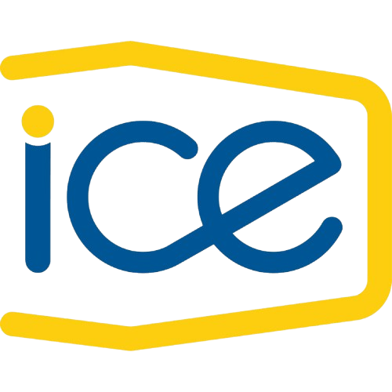
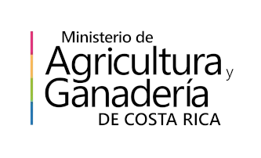
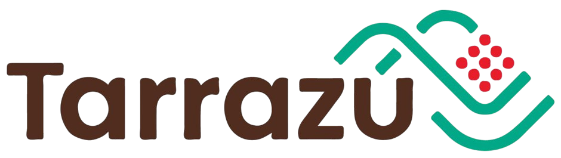
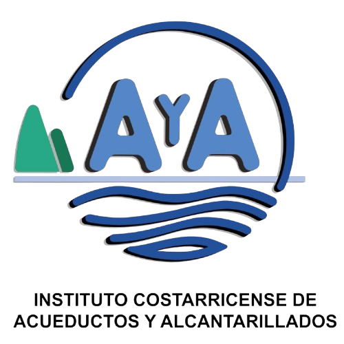

Soporte, outsourcing IT y tecnología moderna para empresas en Costa Rica.
Años de experiencia
Enfoque empresarial
Tiempo de respuesta
Décadas respaldando empresas costarricenses con soluciones tecnológicas confiables.
Trabajamos con empresas de diversos sectores que confían en nosotros día a día.
Respuesta rápida y atención continua para que tu operación nunca se detenga.
Nos adaptamos constantemente a las nuevas tecnologías para ofrecerte lo mejor.
Empresas que confían en UMC



